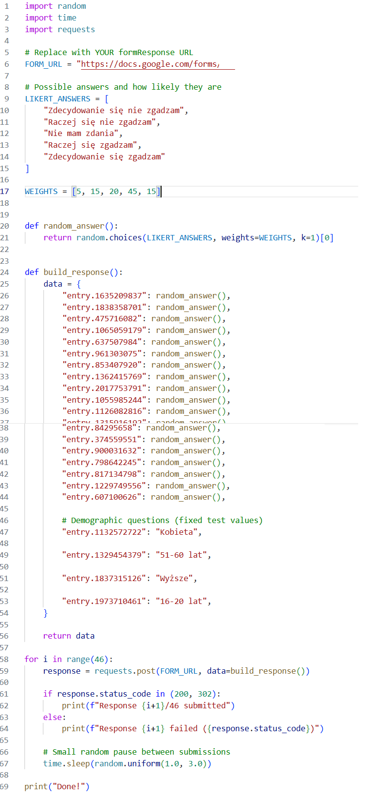

Skrypt automatyzujący napisany w Pythonie, służący do generowania syntetycznych odpowiedzi ankietowych z wykorzystaniem ważonego losowania oraz zdefiniowanych parametrów demograficznych.
Aplikacja symuluje odpowiedzi na kwestionariusz wykorzystujący 5-stopniową skalę Likerta, stosując konfigurowalne wagi prawdopodobieństwa do kontrolowania rozkładu odpowiedzi. Uwzględnia również zdefiniowane atrybuty demograficzne oraz automatyzuje wysyłanie żądań HTTP POST w celu przesyłania wygenerowanych odpowiedzi testowych do punktu końcowego formularza.
Główne funkcjonalności:Poznanie metod generowania danych syntetycznych, losowania opartego na prawdopodobieństwie oraz automatyzacji w Pythonie na potrzeby testowania kwestionariuszy i walidacji przepływów danych.
